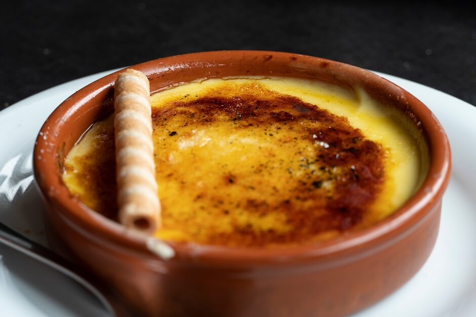
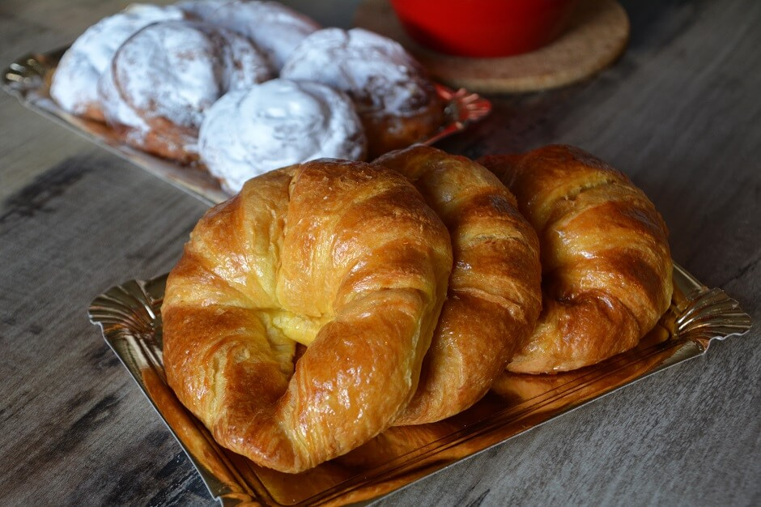
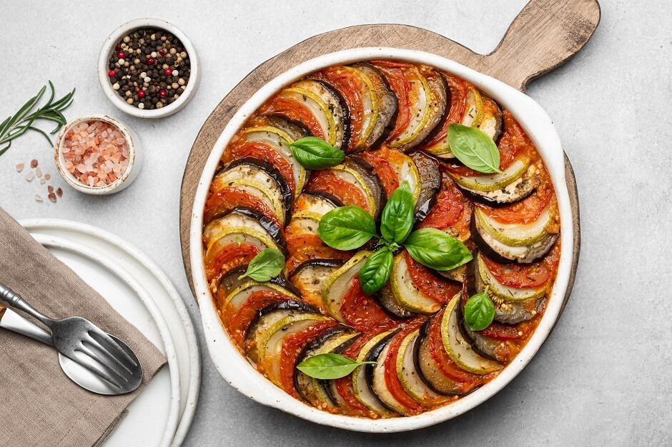
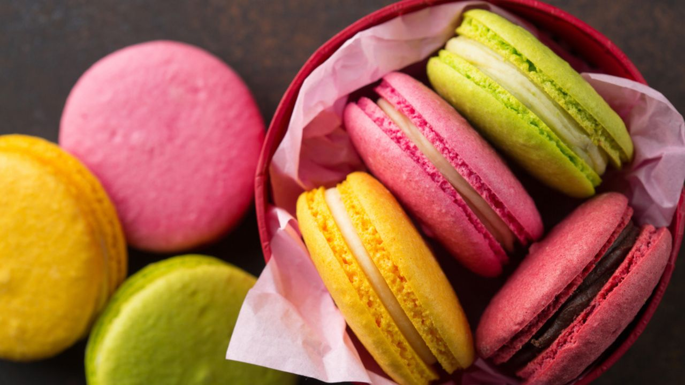

Culinária Francesa
A grande variedade de queijos, vinhos, carnes e doces é a imagem de marca da França em termos de gastronomia.

A grande variedade de queijos, vinhos, carnes e doces é a imagem de marca da França em termos de gastronomia.

| Valor: | Euro: | € 6,50 |
| Real: | R$ 36,21 |
Uma das sobremesas mais famosas da França. A sobremesa nada mais é do que um creme doce de ovos assado em banho maria. Para formar a famosa crosta no topo, é colocado açúcar cristal na superfície do creme assim que ele termina de assar. Um maçarico é utilizado então para caramelizar o açúcar, formando a crosta.

| Valor: | Euro: | € 1,50 |
| Real: | R$ 10,03 |
O doce chegou à França em 1770 pelas mãos da rainha Maria Antonieta, que era austríaca e sentia saudades da sua terra natal. Porém, a versão folhada, leve e crocante como conhecemos hoje só foi desenvolvida pelos padeiros parisienses no início do século XX.

| Valor: | Euro: | € 15,00 |
| Real: | R$ 83,60 |
Popularizado pelo filme da Disney o ratatouille é um delicioso ensopado de legumes de verão, levando pimentões, abobrinha e berinjela cozidos no molho de tomate. Ervas como o alecrim e o manjericão dão sabor e aroma à receita.

| Valor: | Euro: | € 2,50 |
| Real: | R$ 7,00 |
O macaron é um doce clássico da culinária francesa feito com duas casquinhas à base de farinha de amêndoas e merengue, unidas por um recheio cremoso.